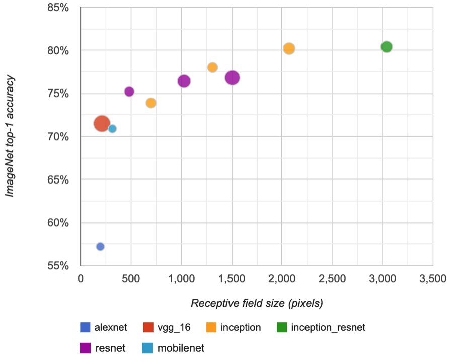
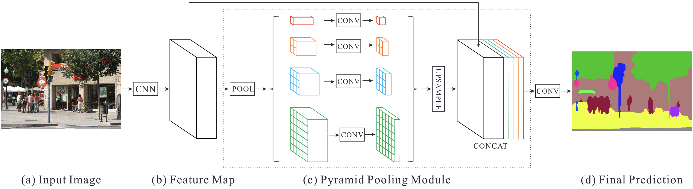
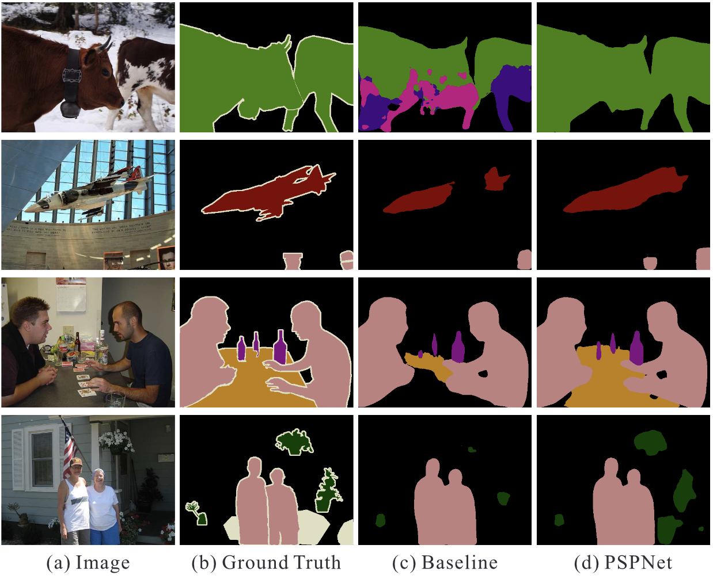
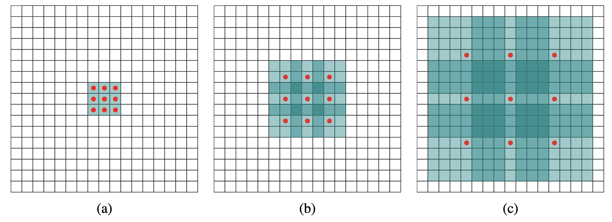
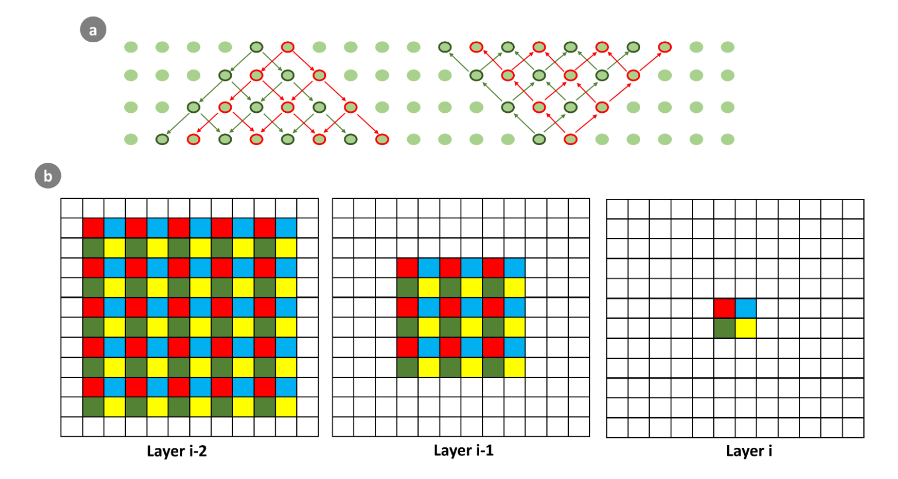
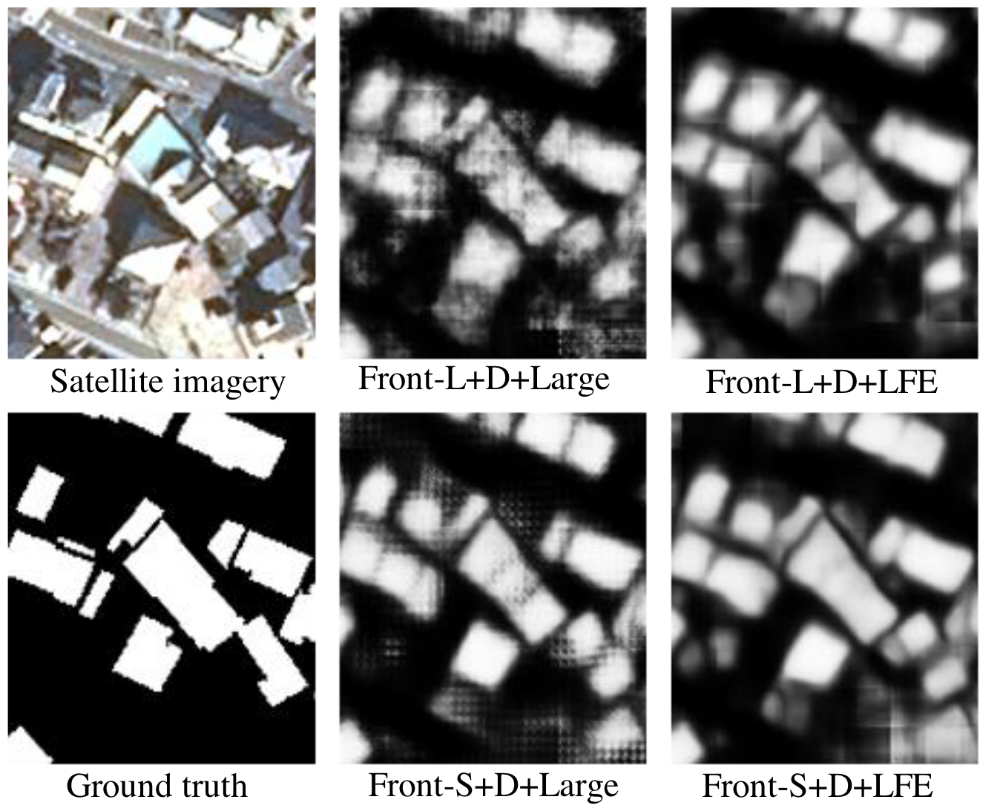
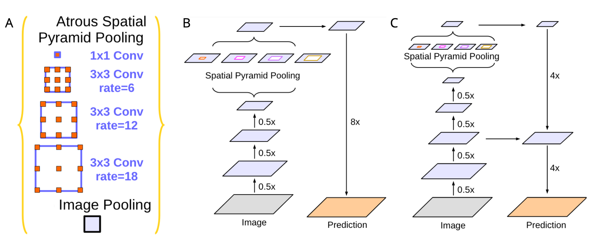
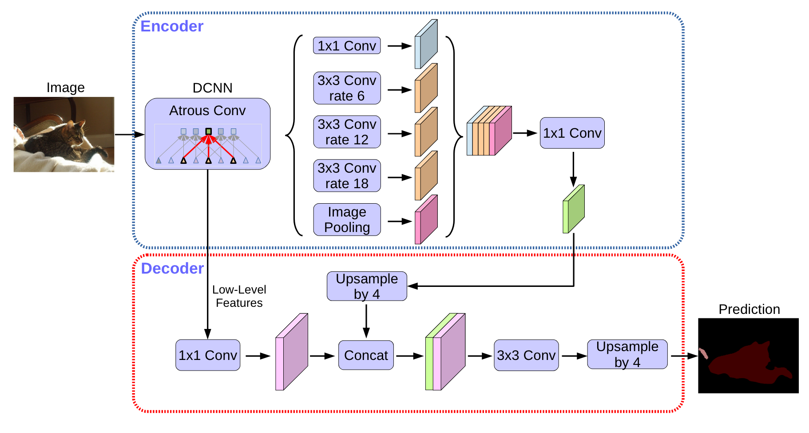

More on Semantic Segmentation with CNNs
1 Overview
In the previous section and its associated practicals and assignment, we learned some of the basics of CNNs used for semantic segmentation, while learning more about the process of feeding data to a model. At the very end of the chapter, we mentioned that there are other important architectures out there beyond the encoder-decoder networks, and we pointed you to some readings on these. In this section, we are going to learn a little more about these, and some of their key ingredients.
2 Increasing the receptive field
In the previous section we learned about architectures that mostly use ordinary convolutions followed by pooling to build up more comprehensive features as the network deepens. The deeper the network gets, the larger it’s effective receptive field becomes–that is, its learns from a larger area of the input image. In the case of satellite imagery, the spatial context is crucial for semantic segmentation tasks. The images captured by satellites cover large areas and can contain many objects of interest that need to be identified and segmented. A large enough RF ensures the model can capture the relevant contextual information to better establish the spatial relationships between objects in the image, leading to better segmentation results and improved accuracy.
However, as we have seen, getting really deep can be difficult, and the receptive field can therefore get only so large (see Figure 1), limiting the spatial context that the network can learn from, and therefore increasing error rates in pixel classifications (Khallaghi et al. 2023). Furthermore, after all that pooling, to do semantic segmentation, you have to recover the input image dimensions, which requires a decoder of some sort that uses transposed convolutions, unpooling, etc. (as we have already learned).
Furthermore, there is a point where increasing the size of the convolutional kernel and the stride does not lead to further improvements in performance (also see Figure 1). This is because increasing the RF beyond a certain point can lead to the loss of fine-grained details and local information in the image.

Given these complications, other approaches have been developed to either increase the spatial context the network can learn, and/or to make it easier to maintain or recover the original (spatial) resolution of input imagery.
2.1 Pyramid strategies
One such approach is based on using pyramid-based approaches, in which a module consisting of multiple branches is used to examine different spatial scales, ranging from the global to the local, with the goal of improving the model’s dense predictions. An example of this approach is the pyramid pooling module implemented as part of PSPNet (Zhao et al. 2017). This module is situated at the base of a CNN backbone (the authors used several flavors of ResNet), and consists of 4 parallel branches that first apply average pooling to the output feature maps from the last layer of the backbone, each of which examines a different set of scales, ranging from a set of smaller sub-regions (e.g. 16) to the entire feature map, improving and broadening the understanding of spatial context. These pooled features are then passed these through 1X1 convolutions, followed by batch normalization and ReLu activation (Figure 2), after which the resulting feature maps, which vary in number, undergo bilinear interpolation to the dimensions of the inputs coming in from the base of the CNN, are concatenated together with each other and the original unpooled input feature maps. These features are all then interpolated back up to the resolution of the original input image, and then passed through additional convolutional layers to a final classification.

This structure enabled PSPNet to outperform a baseline model on semantic segmentation of imagery in the PASCAL VOC 2012 dataset, as shown in Figure 3, which illustrates the sharper and more complete segmentations by PSPnet.

2.2 Dilated convolutions
An alternative way to increase the receptive field (RF) while improving the ability to recover spatial resolution is to minimize the amount of downsampling that you do, and let the kernel do more work. In this case, we are talking about dilated convolutions, or atrous convolutions. Atrous is a French word that means with holes, and, in as you can see from Figure 4 below, dilated convolution have gaps, or holes, between cells in the kernels. The size of the gaps are controlled by the dilation rate \(r\). The larger the \(r\), the greater the area observed by the kernel, and the larger the gaps. Obviously, the gaps means that the kernel is ignoring the areas between the kernel, but the kernel can leverage the typically strong correlations between adjacent pixels to learn without losing information about the scene. And it achieves the larger RF without increasing the number of parameters, and expanding the dilation rate in each successive layer expands the effective RF exponentially (Yu and Koltun 2016).

The RF of a single dilated convolution can be calculated as:
\[k+(k-1)(r-1) \tag{1}\]
With \(k\) as the kernel, and \(r\) as the dilation rate. This gives the single side of the RF, so to get the full area, square that. So, a 3x3 kernel with an \(r\) of 2 will return a value of 5 from Equation 1, which will give a total RF of 25 pixels.
We can calculate the ERF of a series of dilated convolutions by starting from the input and calculating the RF of subsequent layers recursively by adding the RF of the current layer to the RF of the previous layer. For the input (aka. layer 0) the RF is always 1. For the first layer in the network, the RF is equal to the size of the kernel.
\[ERF_{1} = k_1 + (k_1-1) \times (r_1 - 1) \tag{2}\]
In case we are using same padding in the first conv layer:
\[ERF_{2} = ERF_{1} + (k_2 + (k_2-1) \times (r_2 - 1)) \times s_1 \tag{3}\]
Where \(s\) is stride. If we are using valid convolution in the first layer:
\[ ERF_{2} = ERF_{1} + (k_2 + (k_2-1) \times (r_2 - 1)) \times s_1 - (p_1 - 1) \tag{4}\]
Here \(p\) is padding.
The following is a recursive formula for a valid network if we have same “padding” as part of the ERF calculation:
\[ ERF_L = \sum_{l=1}^{L} \left((k_l + (k_l-1) \times (r_l - 1)) \cdot \prod_{i=1}^{l-1} s_i \right) + 1 \tag{5}\]
This is the same formula if we do not have padding for all conv layers:
\[ ERF_L = \sum_{l=1}^{L} \left((k_l + (k_l-1) \times (r_l - 1)) \cdot \prod_{i=1}^{l-1} s_i - (p_i - 1) \right) + 1 \tag{6}\]
Here, \(d_l\) is the dilation rate of layer \(l\), \(k_l\) is the kernel size, \(s_i\) and \(p_i\) are the stride and padding size of layer \(i\), and \(L\) is the current layer in the neural network.
Note:
- We are providing the formulas above since there are several different approaches out there for calculating the receptive field.
- Unlike Equation 1, Equation 2 - Equation 6 provide just a single side of the ERF.
For more information check these references, but their formulation of ERF might be a bit different: 1, 2
Dilated convolutions can have their problems, of course. One particular problem that can happen is that if you stack successive layers of dilated convolutions, you can end up with checkerboard artifacts, as shown in Figure 5.

The effect of that checkerboarding on model results is shown in Figure 6, presented in a paper by Hamaguchi et al. (2018), who implemented a special local feature extraction module, which consists of a stack of dilated convolutions that have progressively decreasing rates of dilation (from 3 to 1), which helps eliminate the artifacts.

There are many other approaches to implementing dilated convolutions, and these are summarized in Khallaghi et al. (2023). For example, one of them is called hybrid dilated convolution, which divides dilated convolutional layers into groups (as in ResNeXt), with each group using a different dilation rate. Parallel branches of dilated convolutions are also commonly used, and features in the Atrous Spatial Pyramid Pooling Module (ASPP) that we will look at in Practical 4, which was introduced in the DeepLab family of models (Chen et al. 2017a, 2018). We’ll look at this here briefly in a little more detail.
2.3 ASPP and DeepLab
The DeepLab family of models have been reasonably widely applied for semantic segmentation tasks in Earth Observation. One example is in Chen et al. (2020), who used the model to detect oil spills in imagery.
DeepLab has several incarnations, the most recent being DeepLab v3+ (Chen et al. 2018). The ASPP module was introduced in the first DeepLab (Chen et al. 2017a), and as of the latest versions consists of 5 parallel layers, three of which are dilated convolution layers, with rates of 6, 12, and 18, along with a 1x1 convolutional layer and a global pooling layer(Figure 7 A). The ASPP module is inserted after about block 3 or 4 of the encoder (which can be of several types, starting with ResNet), after the image has been downsampled by a factor of 8X (Figure 7 B). The four convolutional layers maintain the same dimensions 8X downsampled relative to the input, while the global pooling is interpolated up to the resolution of the other four, and all 5 are concatenated together. In DeepLabV3, the outputs of the ASPP are passed through a 1X1 convolutional layer, then undergo bilinear upsampling to recover the scale of the input image, after which they are passed through a final set of convolutions followed by classification (Figure 7 B). DeepLabV3+ expands on this by adopting features of an encoder-decoder architecture. It does this by interpolating the output of the ASPP by a factor of 4X, then concatenating it with the adjacent layer of the encoder that is 1/4 of the resolution of the input, followed by a final 4X interpolation to the original input resolution, and then the final block of convolutional layers and classification (Figure 7 C & Figure 8).

